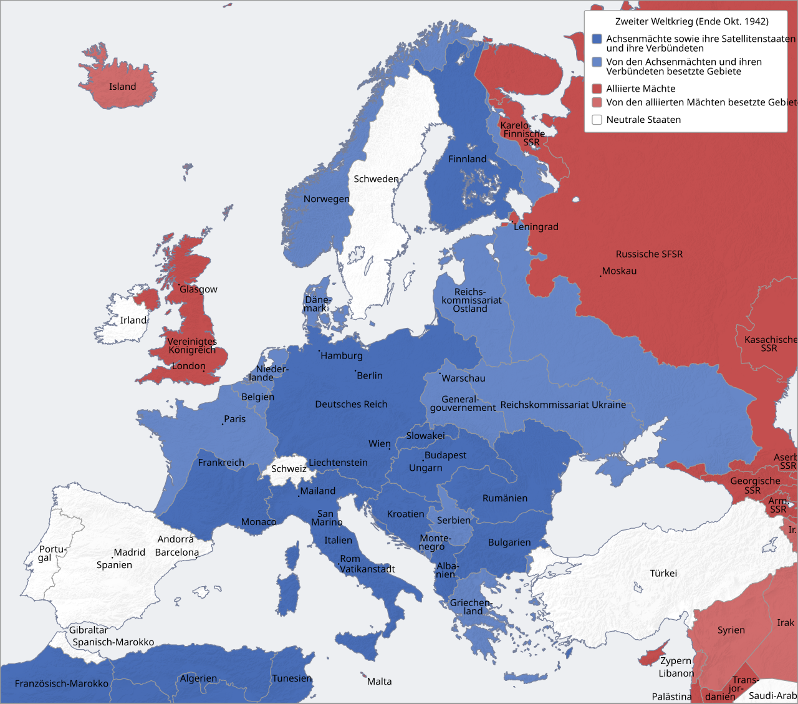

Po první světové válce zůstala Evropa rozdělená a nestabilní. Versailleská smlouva zatížila Německo reparacemi a ztrátou území, hospodářská krize po roce 1929 přinesla nezaměstnanost a posílila extremisty. V Německu se v roce 1933 dostal k moci Adolf Hitler, v Itálii vládl už od roku 1922 Mussolini, v Japonsku sílil militarismus. Západní mocnosti zpočátku volily politiku ústupků (appeasement), jejímž symbolem se stala Mnichovská dohoda z roku 1938.
